कहानी सुनेंभारतीय अंग्रेज़ी और हिंदी में ऑडियो कथन की योजना है; रिकॉर्डिंग अभी उपलब्ध नहीं है।
दुर्गा पूजा केवल त्योहार क्यों नहीं है
बंगाल की दुर्गा पूजा (দুর্গাপূজা) श्रद्धा, कला और परिवार के पुनर्मिलन का अनोखा संगम है। कुछ दिनों के लिए गलियाँ रोशनी और शिल्प की प्रदर्शनी बन जाती हैं, ढाक की गूँज सुनाई देती है और माँ दुर्गा को घर आई प्रिय पुत्री के रूप में स्वागत किया जाता है। पूरे भारत में देवी की आराधना की अनेक परंपराएँ हैं; बंगाल की शारदीय पूजा में आगमन की खुशी और विदाई की भावुकता विशेष रूप से दिखाई देती है।
महिषासुरमर्दिनी की कथा
मार्कण्डेय पुराण के देवी माहात्म्य में महिषासुर के अत्याचार से देवता व्याकुल होते हैं। देवताओं की संयुक्त तेजस्विता से देवी दुर्गा प्रकट होती हैं और उन्हें दिव्य आयुध मिलते हैं। युद्ध में वे रूप बदलने वाले महिषासुर का अंत करती हैं। यह शक्ति, धर्म और साहस के द्वारा अहंकार पर विजय का प्रतीक है। बंगाल की प्रतिमाओं में बहुभुजा देवी, सिंह और महिषासुर का यह दृश्य दिखता है। यह धार्मिक आख्यान है; इसे आधुनिक इतिहास के सत्यापित घटना-वृत्त की तरह प्रस्तुत नहीं करना चाहिए।
बंगाल में माँ दुर्गा को “उमा” और मायके आई बेटी क्यों कहते हैं
एक दूसरी, अत्यंत आत्मीय बंगाली लोक-भक्ति परंपरा में माँ दुर्गा को उमा या पार्वती माना जाता है, जो शरद ऋतु में अपने मायके आती हैं। प्रतिमा में प्रायः लक्ष्मी, सरस्वती, गणेश और कार्तिकेय भी साथ होते हैं। दशमी का अर्थ इस भाव में बेटी की कैलाश स्थित शिव के घर वापसी है। “माँ एशेछेन” यानी माँ आ गई हैं, और विदाई पर “आश्छे बोछोर आबार होबे” यानी अगले साल फिर उत्सव होगा। उमा का मायके आना और देवी माहात्म्य की युद्ध-कथा अलग धार्मिक-सांस्कृतिक दृष्टियाँ हैं।
घर की पूजा से सामुदायिक कला तक
बंगाल में पारिवारिक पूजा के साथ-साथ सार्वजनिक या सार्वजनिन पूजा ने पड़ोसियों और कारीगरों को जोड़ा। कुम्हार टोली (कुमारटुली) जैसे केंद्रों के मूर्तिकार मिट्टी की प्रतिमा बनाते हैं, जबकि पंडाल, रोशनी, संगीत और सजावट में असंख्य कलाकार काम करते हैं। यूनेस्को ने 2021 में “कोलकाता में दुर्गा पूजा” को अमूर्त सांस्कृतिक विरासत की प्रतिनिधि सूची में शामिल किया। इस उत्सव की पहचान केवल पूजा-पाठ नहीं, जीवंत कला और साझी भागीदारी भी है।
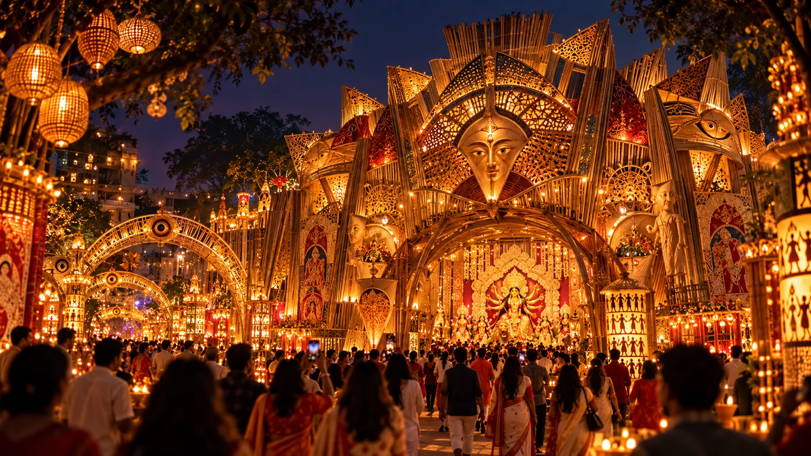
बंगाली दुर्गा पूजा कैसे जीवंत होती है: पंडाल और प्रतिमा-निर्माण
1
ढाँचा
बाँस और सरकंडे
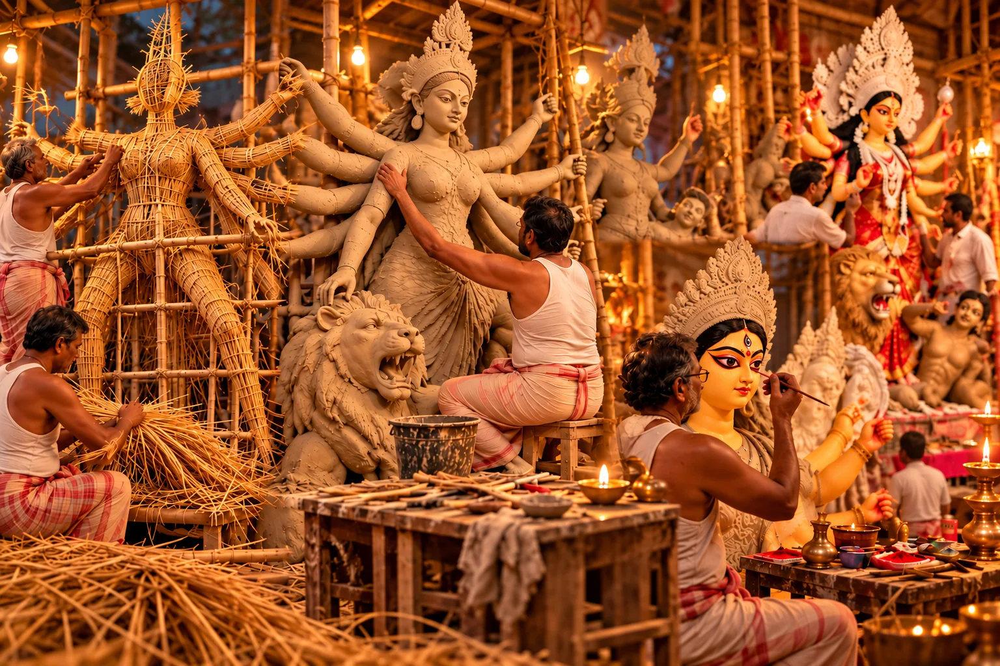
2
पुआल
आकृति का निर्माण
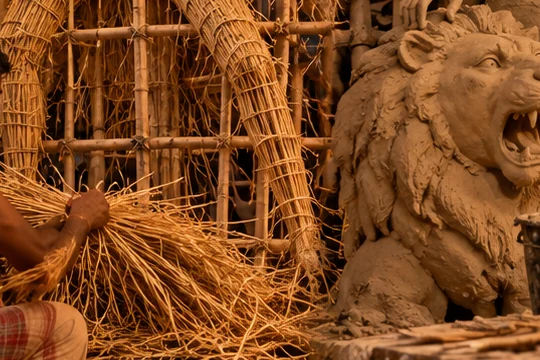
3
मिट्टी
परतें, सुखाना, निखार
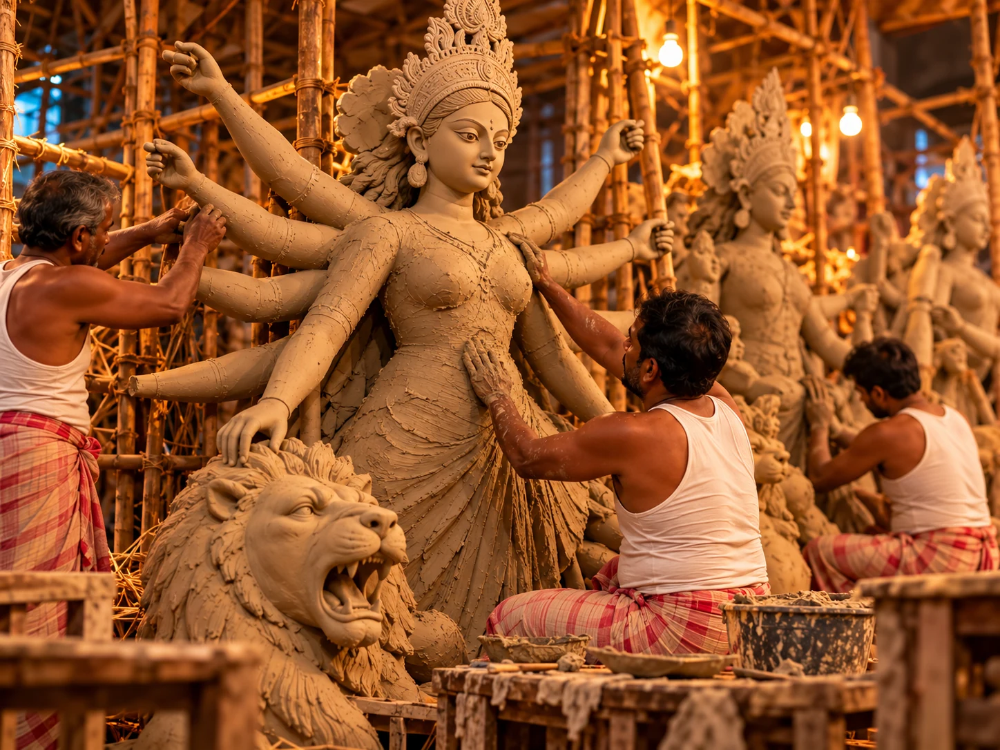
4
रंग
मुख और शरीर
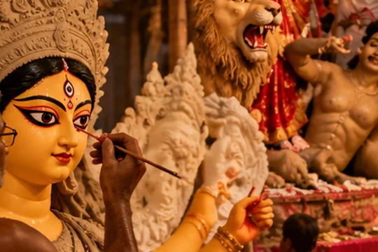
5
अलंकरण
वस्त्र, मुकुट, सज्जा
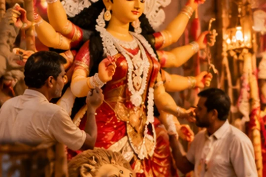
बाँस के ढाँचे से मिट्टी की देवी तक। बंगाल में दुर्गा प्रतिमा-निर्माण एक पीढ़ियों से चली आ रही सजीव कला है, जिसका सबसे प्रसिद्ध केंद्र कोलकाता का कुम्हारटोली (कुमारटुली) है। पहले बाँस या सरकंडे का ढाँचा बनाया जाता है और पुआल बाँधकर शरीर का आकार दिया जाता है। फिर उस पर मिट्टी की परतें चढ़ती हैं—पहली परत मोटे आकार के लिए, और बाद की चिकनी परतें चेहरे, हाथों और सूक्ष्म विवरण के लिए। सूखने के बाद प्रतिमा को घिसकर समतल किया जाता है, रंगा जाता है और फिर उसे वस्त्रों व आभूषणों से सजाया जाता है। आँखें बनाना विशेष रूप से पवित्र माना जाता है; अंतिम नेत्रांकन को प्रायः चोख्खु दान कहा जाता है।
सज्जा और रूप-विन्यास। अनेक प्रतिमाएँ वस्त्र, मुकुट, आयुध, आभूषण और शोला जैसी सजावटी सामग्री से अलंकृत की जाती हैं। कुछ पारंपरिक प्रतिमाओं में चमकदार डाकर साज शैली दिखाई देती है, जो रजत-सदृश सजावट के लिए प्रसिद्ध है। परिचित पारिवारिक विन्यास में मध्य में माँ दुर्गा, और साथ में लक्ष्मी, सरस्वती, गणेश तथा कार्तिकेय होते हैं; सिंह और महिषासुर विजय-दृश्य को पूर्ण करते हैं।
पंडाल वास्तव में क्या होता है? पंडाल केवल अस्थायी मंडप नहीं है। वह एक साझा सामुदायिक सृजन है—आधा मंदिर, आधा कलात्मक स्थापना, और आधा मिलन-स्थल। कुछ पंडाल पारंपरिक मंदिर-रूप लेते हैं, जबकि कुछ सामाजिक, ऐतिहासिक या पर्यावरणीय विषयों पर आधारित थीम रचते हैं। इस निर्माण में डिज़ाइनर, बढ़ई, बिजली-कर्मी, प्रकाश-विशेषज्ञ, चित्रकार, मूर्तिकार, पुरोहित, ढाकी, रसोइये और स्वयंसेवक सब योगदान देते हैं।
पूजा के आसपास का जीवन। लंबी कतारें, शाम की रोशनी, ढाक की लय, भोग-वितरण और पंडाल-हॉपिंग दुर्गा पूजा के जीवंत वातावरण का हिस्सा हैं। अब कई पूजा समितियाँ भीड़-प्रबंधन, सुरक्षा और पर्यावरण-अनुकूल सामग्री पर भी ध्यान देती हैं ताकि विसर्जन नदियों और जलाशयों के प्रति अधिक संवेदनशील हो। हर पूजा का रूप एक-सा नहीं होता, लेकिन एक भावना समान रहती है—भक्ति, शिल्प, आतिथ्य और सामुदायिक गर्व का सुंदर संगम।
यदि आप चाहें, तो आगे चलकर हम कुमारटुली, डाकर साज, एक-चाला प्रतिमा और पर्यावरण-अनुकूल विसर्जन पर एक अलग गहरा खंड भी जोड़ सकते हैं।
बंगाली दुर्गा पूजा 2026: प्रमुख दिन
16 Oct 2026
पंचमी
उत्सव का माहौल और पंडाल दर्शन।
17 Oct 2026
षष्ठी
देवी का आवाहन और स्वागत।
18 Oct 2026
सप्तमी
नवपत्रिका स्नान और स्थापना।
19 Oct 2026
अष्टमी
अंजलि और संधि पूजा।
20 Oct 2026
नवमी
पूजा, भोग और सामूहिक आयोजन।
21 Oct 2026
बिजोया दशमी
विदाई, विसर्जन और बिजोया संदेश।
बंगाल में बिजोया दशमी बुधवार, 21 अक्टूबर 2026 है; अन्य भारतीय क्षेत्रों में विजयादशमी प्रायः मंगलवार, 20 अक्टूबर को है। भारत सरकार के राष्ट्रीय पंचांग और कोलकाता के लिए बंगाली पद्धति से तैयार पंचांग में इस अंतर की पुष्टि मिलती है। स्थानीय पूजा के मुहूर्त अपने पुजारी या पंचांग से जाँचें।
पाँच प्रमुख दिनों की परंपराएँ
महालया देवी के आवाहन और पितरों के स्मरण का महत्वपूर्ण समय है। षष्ठी को कई परंपराओं में बोधन, आमंत्रण और अधिवास होता है। सप्तमी पर नवपत्रिका—नौ पौधों का समूह—स्नान कराकर स्थापित किया जाता है; केले के पौधे को कोला बौ कहते हैं, पर इसे केवल गणेश की पत्नी मानना सही नहीं। अष्टमी पर पुष्पांजलि और अष्टमी-नवमी के संधिकाल में संधि पूजा महत्वपूर्ण है। नवमी में पूजा, अनेक पंडालों में होम तथा सामूहिक भोग होता है। दशमी पर विदाई और विसर्जन होता है। स्थानीय पंचांग और मंडल के अनुसार समय व क्रम बदल सकता है।
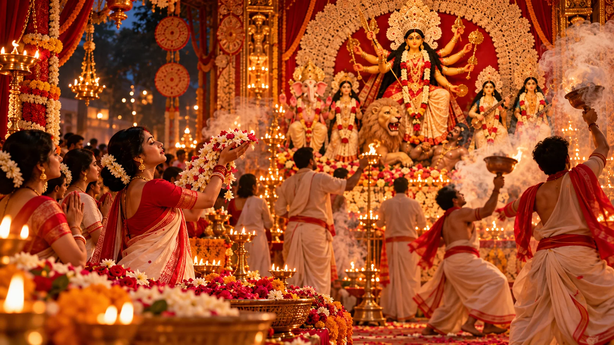
ढाक, धुनुची, अल्पना और पंडाल
ढाक की गहरी ताल दुर्गा पूजा की पहचान है। आरती के समय धूप से भरे मिट्टी के पात्र के साथ धुनुची नृत्य किया जाता है। चावल के घोल से बनी अल्पना के सुंदर चित्र घरों और पंडालों को सजाते हैं। पंडाल दर्शन, सांस्कृतिक कार्यक्रम और मिलने-जुलने के अवसर के साथ उत्सव स्थानीय कारीगरों, बुनकरों, रसोइयों और छोटे व्यवसायों को भी आजीविका देता है।
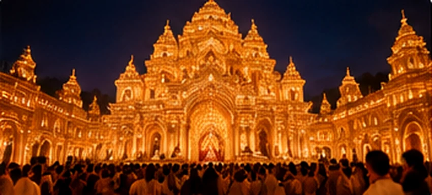
भोग और बिजोया की मिठाइयाँ
सार्वजनिक पूजा का भोग कई स्थानों पर खिचुड़ी, लाबड़ा (मिश्रित सब्जियाँ), चटनी और पायेश से बनता है। परिवार और क्षेत्र के अनुसार भोजन अलग हो सकता है। बिजोया पर नारकेल नारू, संदेश, रसगुल्ला, निमकी और अन्य पकवान बाँटे जाते हैं। ये लोकप्रिय उदाहरण हैं, किसी एक अनिवार्य विधि के नियम नहीं।
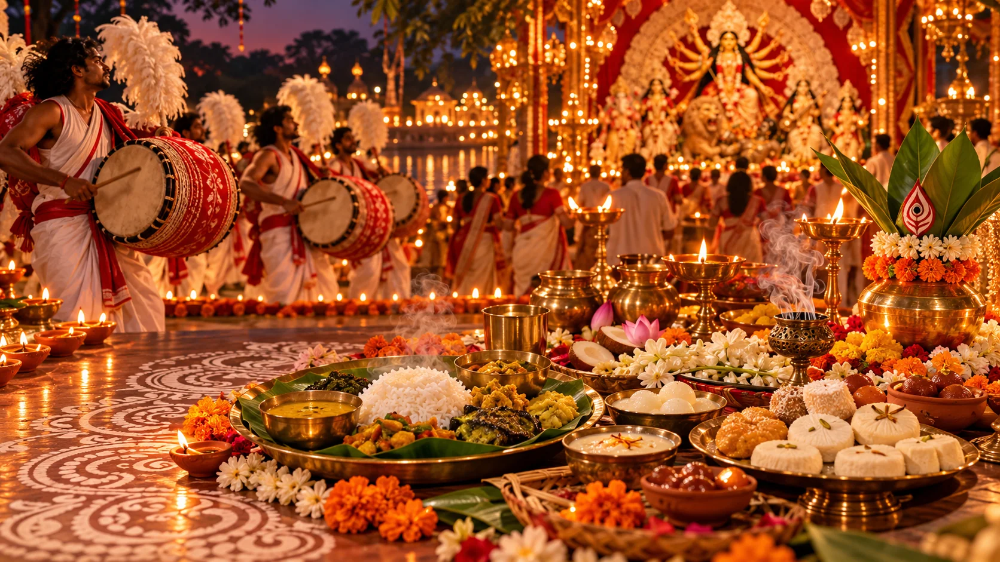
बिजोया दशमी की विदाई
दशमी पर कई बंगाली पूजा मंडलों में देवी बरण (बोरॉन) किया जाता है—देवी को मिठाई, पान और सिंदूर अर्पित करके विदाई दी जाती है। फिर कुछ परंपराओं में सिंदूर खेला होता है, जिसमें पारंपरिक रूप से विवाहित हिंदू महिलाएँ भाग लेती थीं; आज अनेक समुदाय अपनी रीति और सहभागिता अलग तरह से तय करते हैं। इसके बाद प्रतिमा का विसर्जन होता है। पर्यावरण का ध्यान रखते हुए स्वीकृत विसर्जन स्थलों और उपयुक्त सामग्री का उपयोग करना अच्छा है। विदाई में प्रेम और अगले वर्ष फिर मिलने का विश्वास दोनों साथ होते हैं।
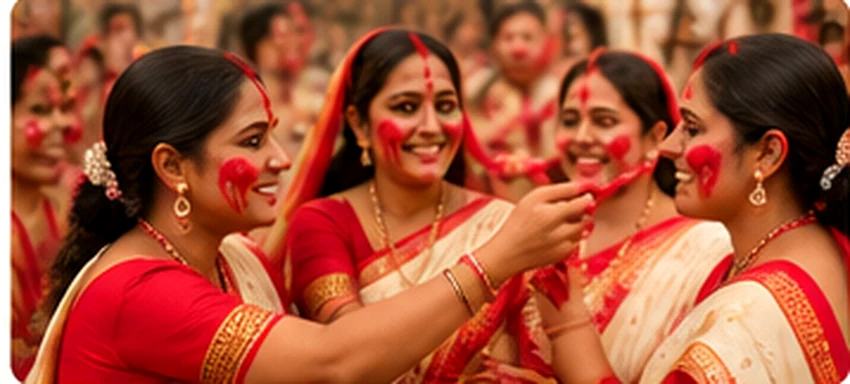
“शुभो बिजोया” का अर्थ और कहानी
बंगाली में “শুভ বিজয়া” (शुभो बिजोया) का अर्थ शुभ विजय है। यह देवी की महिषासुर पर विजय का स्मरण कराता है, पर बंगाली सामाजिक जीवन में इसका अर्थ रिश्तों को नए सिरे से जोड़ना भी है। छोटे बड़ों को प्रणाम करके आशीर्वाद लेते हैं, मित्र और रिश्तेदार कोलाकुली अर्थात गले मिलते हैं, और घरों में मिठाई बाँटी जाती है। दशमी के बाद भी कई दिनों तक मुलाकातों, फोन और संदेशों का सिलसिला चलता है। इस शुभकामना में विदाई की कसक और पुनर्मिलन की आशा एक साथ समाहित हैं।
बंगाल से दूर रहकर भी उत्सव कैसे मनाएँ
जहाँ संभव हो, स्थानीय बंगाली दुर्गा पूजा में जाएँ और पूजा के नियमों का आदर करें। आरती या प्रार्थना में लगे लोगों की तस्वीर लेने से पहले अनुमति माँगें। दूर रहने पर परिवार को फोन करें, बच्चों को देवी की दो कहानियाँ समझाएँ, दोस्तों के साथ भोजन करें या किसी सांस्कृतिक कार्यक्रम में शामिल हों। श्रद्धा, साहस, कृतज्ञता और रिश्तों को सँभालना भी इस त्योहार की आत्मा है।
शुभो बिजोया — साझा करने के लिए संदेश
শুভ বিজয়া! মায়ের আশীর্বাদে সকলের জীবন ভরে উঠুক শান্তি, সাহস, সুস্বাস্থ্য আর ভালোবাসায়।
अर्थ: शुभो बिजोया! माँ के आशीर्वाद से सबके जीवन में शांति, साहस, स्वास्थ्य और प्रेम बना रहे।
ध्यान दें: आज 17 अक्टूबर को “शुभ शारदीया” उपयुक्त है; इस बिजोया संदेश को 21 अक्टूबर से साझा करें।
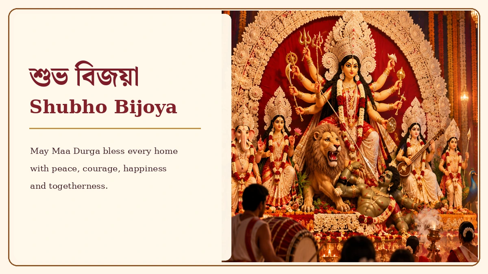
शुभो बिजोया की शुभकामनाएँ — बिना किसी वेबसाइट के नाम के साझा करें।